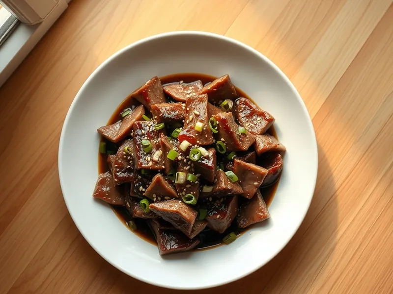

Говядина терияки с кунжутом
Ломтики говядины в густом сладком соусе терияки, посыпанные кунжутом
20 мин2 порц.514 ккал на порциюБ 36 · Ж 34 · У 17Азиатская кухня
Открыть в приложении: порции, таймеры, список покупок
Продукты на 2 порц.
- Говядина350 г
- Соевый соус3 ст. л.
- Мёд1 ст. л.
- Имбирь10 г
- Чеснок2 зуб.
- Крахмал1 ч. л.
- Вода50 мл
- Растительное масло1 ст. л.
- Кунжут2 ч. л.
- Зелёный лук по желаниюпо вкусу
Как готовить
- Нарежьте говядину тонкими ломтиками поперёк волокон. Смешайте соевый соус, мёд, тёртый имбирь, мелко рубленный чеснок, крахмал и воду.
- Разогрейте масло на сильном огне. Обжарьте говядину в два захода по 2 минуты, пока ломтики не подрумянятся.
- Верните всё мясо в сковороду и влейте соус, перемешав его перед этим, чтобы крахмал не осел.
- Готовьте 2 минуты на среднем огне, помешивая, пока соус не станет густым и глянцевым.
- Посыпьте кунжутом и нарезанным зелёным луком.
Совет. Подержите говядину 15 минут в морозилке перед нарезкой: полутвёрдое мясо легко режется на тонкие ломтики.